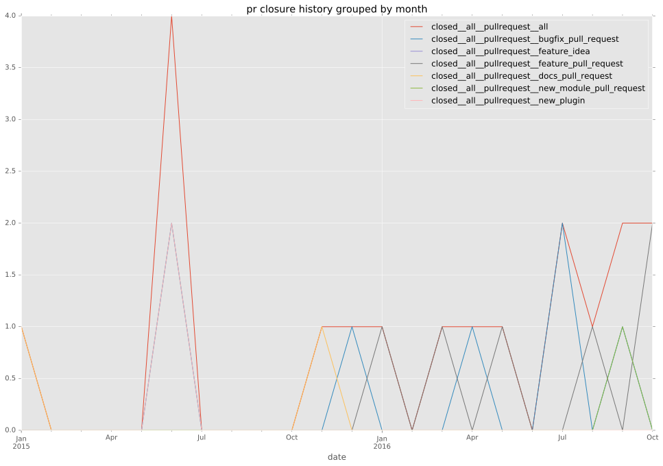

total issue counts
unknown: 1
bugfix pull request: 6
pullrequest: 21
docs pull request: 2
feature pull request: 8
issue: 1
new plugin: 4
bug report: 1
issue history

pullrequest history

days open by issue type
feature pull request
count: 8
std: 21.5986110665
min: 3
max: 56
median: 15.0
mean: 22.25
all
count: 28
std: 17.8332591602
min: 0
max: 62
median: 3.0
mean: 12.1071428571
pullrequest
count: 0
std: nan
min: nan
max: nan
median: nan
mean: nan
docs pull request
count: 3
std: 35.7957166898
min: 0
max: 62
median: 0.0
mean: 20.6666666667
bugfix pull request
count: 11
std: 9.47916375291
min: 0
max: 21
median: 2.0
mean: 7.63636363636
issue
count: 0
std: nan
min: nan
max: nan
median: nan
mean: nan
new plugin
count: 5
std: 3.28633534503
min: 0
max: 8
median: 2.0
mean: 2.4
bug report
count: 0
std: nan
min: nan
max: nan
median: nan
mean: nan
closures grouped by total days open